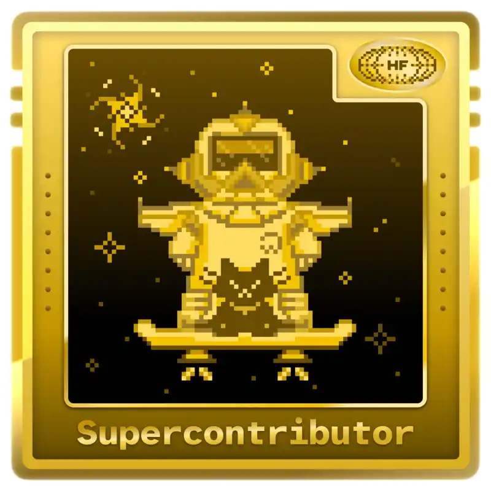

ABDALLAH SOW
Passionné par les sciences humaines, les nouvelles technologies et le développement personnel, je combine une formation en LLCER Mondes Arabes avec un BTS SIO et une solide expérience en programmation et cybersécurité acquise en autodidacte. Mon profil hybride me permet de comprendre les enjeux humains tout en concevant des solutions technologiques innovantes et adaptées aux besoins métiers.
J'ai participé à l'événement #Hacktoberfest2025 pour la contribution OpenSource
et j'ai déjà obtenu le badge de Supercontributor !

🎓 Ma Formation : BTS SIO Option SLAM
Développeur en devenir, passionné par la création de solutions innovantes
Le BTS Services Informatiques aux Organisations (SIO) est un diplôme Bac+2 qui forme les développeurs et techniciens informatiques de demain. Cette formation d'excellence propose deux spécialisations :
Experts en infrastructure et sécurité réseau
Développeurs d'applications et solutions innovantes
🚀 Pourquoi l'option SLAM ?
Passionné par le développement logiciel et la création d'applications, j'ai choisi l'option SLAM pour transformer mes idées en solutions concrètes. Cette spécialisation me permet de maîtriser l'ensemble du cycle de développement :
PHP, Python, C#, JavaScript
Laravel, Symfony, Django
SQL, MySQL, PostgreSQL
Modélisation et optimisation
Conception et consommation d'API REST
Architecture microservices
Gestion de projets modernes
Travail en équipe
Tests unitaires, CI/CD
Debugging et optimisation
Bonnes pratiques de sécurité
Protection des données
💡 L'atout de cette formation ?
Un équilibre parfait entre théorie académique et pratique professionnelle grâce aux stages en entreprise,
me permettant d'acquérir une expertise technique solide tout en comprenant les enjeux métiers réels.
Formation
Explorez mon parcours académique et professionnel, où j'ai acquis des compétences clés dans le domaine de l'informatique et des langues.
Stages
Découvrez le résumé de mes deux stages chez NEOSIT, avec les missions, les outils et les résultats obtenus.
Compétences
Découvrez mes compétences techniques et linguistiques, qui me permettent de contribuer efficacement à divers projets.
Projets
Parcourez mes projets récents, où j'applique mes compétences pour créer des solutions innovantes et fonctionnelles.
Veille technologique
Consultez ma veille Web3 pour l'épreuve E6 : méthodologie, outils et analyse des évolutions récentes du Web3.
Synthèse des compétences
Téléchargez ma synthèse des compétences acquises durant mon BTS SIO, mettant en avant mes réalisations et savoir-faire.